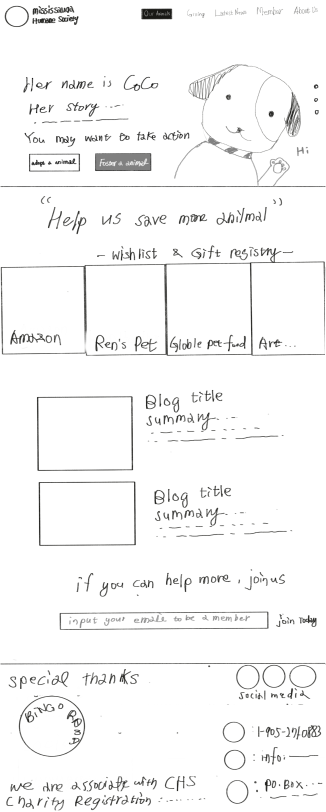
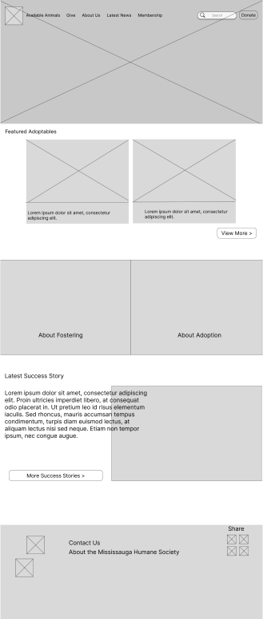
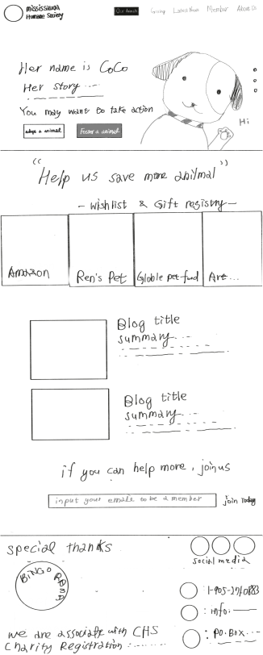
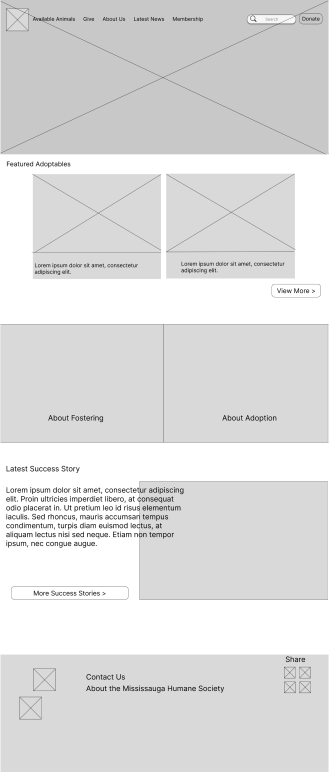

Project Overview
The Mississauga Humane Society is a local non-profit animal shelter dedicated to rehoming cats and dogs in need. Their current website lacks cohesion and content structure causing the mission and the animals to be missed and the user to abandon the site before even considering adopting through them.

People
- Truc Nguyen, UX/UI Designer
- Tom Messore, UX/UI Designer
- Raine Cai, UX/UI Designer
- Bhakti Risbud, UX/UI Designer
My Responsibilities
- Research
- Ideation + Brainstorming
- UI Design
- Information Architecture
- Responsive Design
Timeline
3 Weeks
Existing State
The existing experience lacks a number of UI standards creating inconsistency across the site. These include: no grid system, colour inconsistency across pages, too much white space, lots of text on subpages and lack of visuals. In addition to the UI inconsistencies, the animals and adoption processes are not prominently featured and there is little content above the fold of the homepage. This negatively impacts user engagement leading to users abandoning before exploring adopt or foster options


 


